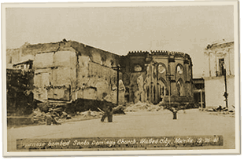

|
j
a v a s c r i p t |
January 26, 1942

The shell of the Santo Domingo Church
Got my Resident Certificate from the City Hall then took a walk through the Walled City to see the ruins. The massive walls of the Santo Domingo Church still stand — a shell guarding the ashes of priceless history. Talked to a friend — ex-chef at the new Letran University building that burned down. The Padres still employ him, paying only a few pesos plus room and board (salary to be paid after the war). Says the Padres are using the old Letran Building to house a few refugees from Cavite and the sick of Santo Tomas, though many aren’t really sick but just “at their wits’ end.” Later, we got a thank-you note with P30 for past services from friends at Santo Tomas, saying the Red Cross would take over feeding them in a couple of days. Japanese soldiers are still flooding the Escolta with their shopping, and a few navy men are also in town from Atimonan to inspect the remnants of the Cavite Naval Base. The propaganda offensive continues — this time with a letter from a Major. Filipinos ignored it completely; cocheros, carromata passengers and streetcar riders still expect the good times for the Japanese to end within a month or even weeks! |
|
|
|
|